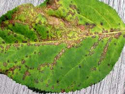

Mung
Mung beans, also known as green gram, are a popular legume cultivated mainly in Asia. They are used in various culinary dishes and are known for their high protein content, making them a staple in vegetarian diets.
Cultivation and Growth
- Climate: Mung grows best in warm, tropical climates with moderate rainfall.
- Soil: Well-drained loamy soils with good fertility are ideal for mung cultivation.
- Planting: Mung is typically planted during the monsoon season for optimal growth.
- Growth: Mung beans are fast-growing plants, with short, bushy stems producing small pods filled with seeds.
Associated Diseases and Prevention
Yellow Mosaic Virus
The Yellow Mosaic Virus causes yellow patches on leaves, leading to stunted growth and yield loss. It is transmitted by whiteflies.

Prevention:
- Use virus-resistant mung bean varieties.
- Control whitefly populations using insecticides or natural predators.
- Plant early to avoid peak whitefly populations.
Powdery Mildew
This fungal disease appears as white, powdery spots on the leaves, stems, and pods.
Prevention:
- Apply fungicides such as sulfur or copper-based sprays early.
- Ensure good air circulation between plants by proper spacing.
- Plant resistant varieties where available.
Cercospora Leaf Spot
Cercospora Leaf Spot causes small, dark spots on leaves, which gradually increase in size.

Prevention:
- Use disease-free seeds and resistant varieties.
- Avoid overhead irrigation to minimize leaf wetness.
- Apply fungicides if necessary, based on disease monitoring.
Anthracnose
A fungal disease causing sunken, dark lesions on stems and pods.

Prevention:
- Plant resistant varieties where available.
- Practice crop rotation with non-legume crops.
- Apply appropriate fungicides, especially in wet conditions.
Root Rot
Root rot affects the roots of mung plants, causing decay due to waterlogged soil and poor drainage.
.jpg)
Prevention:
- Ensure proper soil drainage to avoid waterlogging.
- Avoid overwatering and water stagnation around the plants.
- Apply fungicide treatments in severe cases.
Rust
Rust is a fungal disease causing reddish-brown pustules on leaves.

Prevention:
- Use resistant varieties of mung beans.
- Apply fungicides to control the spread of rust.
- Remove and destroy infected plant debris from the field.